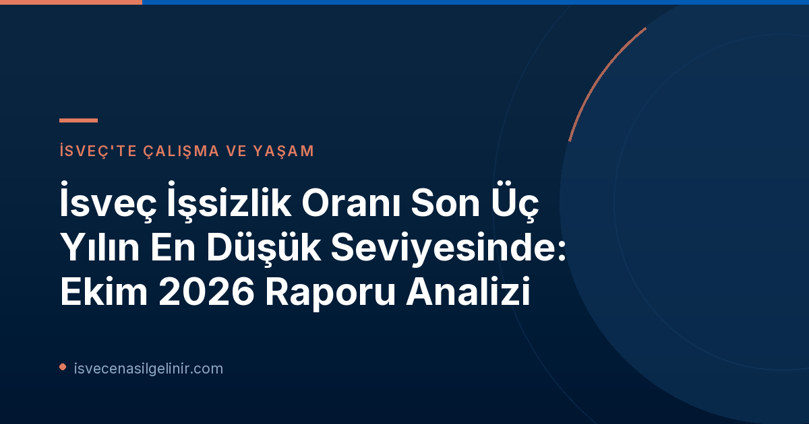

İsveç İşgücü Piyasasında Genel Durum: Üç Yılın En Düşük İşsizlik Oranı
İsveç İş ve İşçi Bulma Kurumu (Arbetsförmedlingen) tarafından 12 Kasım 2026 tarihinde yayımlanan son basın açıklaması, İsveç işgücü piyasasında önemli bir toparlanmaya işaret ediyor. Ülke genelinde işsizlik oranı, Ekim 2023'ten bu yana en düşük seviyesine gerileyerek son üç yılın en iyi performansını sergiledi. Bu durum, İsveç ekonomisinin güçlenmeye devam ettiğinin bir göstergesi olarak değerlendiriliyor.
Arbetsförmedlingen vekaleten tahmin müdürü Emil Persson, konuyla ilgili yaptığı açıklamada, "İşlerin doğru yönde ilerlemeye devam ettiğini görmek sevindirici," ifadelerini kullandı. Ekim 2026 sonu itibarıyla, Arbetsförmedlingen'e kayıtlı işsiz sayısı yaklaşık 339.000 olarak kaydedildi. Bu rakam, geçen yılın aynı ayına göre 18.000 kişilik bir düşüş anlamına geliyor. Yıllık bazda incelendiğinde, işsizlik oranı %6,8'den %6,3'e gerilemiş durumda.
Detaylı İstatistikler: Ekim 2026 İşgücü Piyasası Verileri
İsveç işgücü piyasasının güncel görünümünü daha iyi anlamak için Arbetsförmedlingen tarafından yayımlanan Ekim 2026 verilerini, bir önceki yılın aynı dönemi olan Ekim 2025 verileriyle karşılaştıralım. Bu karşılaştırma, piyasadaki değişimleri ve eğilimleri net bir şekilde ortaya koyuyor.
| Kategori | Ekim 2026 (% veya Kişi Sayısı) | Ekim 2025 (% veya Kişi Sayısı) | Değişim |
|---|---|---|---|
| Kayıtlı İşsiz Oranı | %6,3 | %6,8 | ↓ %0,5 |
| Kayıtlı İşsiz Sayısı (Toplam) | 338.643 | 356.991 | ↓ 18.348 |
| Genç İşsiz Oranı (18-24 Yaş) | %7,4 | %7,8 | ↓ %0,4 |
| Genç İşsiz Sayısı (18-24 Yaş) | 40.054 | 41.792 | ↓ 1.738 |
| 12 Ay ve Üzeri İşsiz Kalanlar | 146.076 | 151.807 | ↓ 5.731 |
| Açık İşsizler | 188.757 | 196.074 | ↓ 7.317 |
| Aktivite Desteği Programlarındaki Kişiler | 149.886 | 160.917 | ↓ 11.031 |
| Yeni İş Arayanlar | 33.051 | 35.288 | ↓ 2.237 |
| İş Bulanlar | 30.674 | 33.338 | ↓ 2.664 |
| İşten Çıkarılma Bildirimi Alanlar | 4.657 | 6.174 | ↓ 1.517 |
Yukarıdaki veriler, İsveç işgücü piyasasının genel olarak bir iyileşme trendinde olduğunu gösteriyor. Çoğu kategoride işsiz sayılarında ve oranlarında düşüşler yaşanırken, genç işsizliği ve uzun süreli işsizlikte de hafif düşüşler gözlemleniyor. İşten çıkarılma bildirimlerindeki azalma da olumlu bir gelişme olarak kaydedildi.
Uzun Süreli İşsizlik: Piyasanın Zayıf Karnesi
Genel iyileşmeye rağmen, uzun süreli işsizler için durum hala zorlu. Arbetsförmedlingen'in raporu, 24 ay veya daha uzun süredir işsiz olan kişilerin sayısının son bir yılda hafifçe arttığını belirtiyor. Bu durum, işgücü piyasasının toparlanmasının bu kesime henüz tam olarak yansımadığını gösteriyor.
Emil Persson, "İşsizlik süresinin, işe geri dönme üzerinde belirgin bir etkisi olduğu çok açık," diyerek uzun süreli işsizliğin etkilerine dikkat çekti. "En uzun süredir işsiz olanların, güçlenen işgücü piyasasından henüz faydalanamadığını görüyoruz." Bu, İsveç'teki iş arayanlar ve özellikle uzun süreli işsizler için özel destek ve stratejilerin önemini bir kez daha ortaya koyuyor.
İsveç Vatandaşlık Süreci ve İşgücü Piyasası
İsveç'te uzun vadeli ikamet ve vatandaşlık hedefleyen bireyler için işgücü piyasasındaki gelişmeler büyük önem taşır. Aktif bir çalışma hayatı, vatandaşlık başvurularında değerlendirilen önemli kriterlerden biridir. İsveç vatandaşlık sürecine dair detaylı bilgi, güncel gereksinimler ve sınav hazırlığı materyalleri için İsveç Vatandaşlık Sınavı adresini ziyaret edebilirsiniz.
Ekonomik Toparlanma ve İstihdam Dinamikleri
İsveç ekonomisi her ne kadar daha güçlü bir yapıya kavuşsa da, işgücü piyasasındaki toparlanma hızı beklentilerin gerisinde kalıyor. Bu gecikmenin başlıca nedenlerinden biri, birçok işverenin yeni personel alımı konusunda hala temkinli davranması olarak gösteriliyor. Ekonomik belirsizlikler ve küresel gelişmeler, şirketlerin istihdam kararlarını etkileyen faktörler arasında yer alıyor.
Ancak düşen işsizlik oranları ve azalan işten çıkarma bildirimleri, piyasada genel bir iyimserliğin oluştuğuna işaret ediyor. Özellikle belirli sektörlerde yetenekli işgücüne olan talebin artması, uzun vadede işsizlik oranlarının daha da düşmesine katkı sağlayabilir.
İstatistiklerin Arka Planı ve Önemli Notlar
Arbetsförmedlingen tarafından yayımlanan bu verilerin, İsveç'in resmi işsizlik istatistikleri olmadığını belirtmek önemlidir. Arbetsförmedlingen'in aylık basın bültenleri, kurumun kayıtlı işsizler ve yeni bildirilen açık pozisyonlar gibi kendi operasyonel verilerine dayanmaktadır. İsveç'in resmi işsizlik istatistikleri, İsveç İstatistik Kurumu (Statistiska centralbyrån - SCB) tarafından yürütülen İşgücü Araştırması (Arbetskraftsundersökningen - AKU) aracılığıyla yayımlanmaktadır.
Ayrıca, istatistiklerin hesaplanmasında kullanılan metodolojide 2024 yılında bir değişiklik yapılmıştır. 2026 yılı için sunulan istatistiklerde yaş aralığı 16-66 iken, 2025 yılı istatistiklerinde bu aralık 16-65 olarak uygulanmıştır. Bu farklılıklar, karşılaştırmalı analizlerde dikkate alınması gereken önemli detaylardır.
Geleceğe Bakış: İşgücü Piyasası İçin Beklentiler
Arbetsförmedlingen, Kasım 2026 işgücü piyasası istatistiklerini 10 Aralık 2026 tarihinde TSİ 08:00'de (yerel saatle 06:00) yayımlayacağını duyurdu. Bu yeni veriler, İsveç işgücü piyasasındaki toparlanmanın hızını ve yönünü daha net bir şekilde ortaya koyacaktır. Uzun vadede, işverenlerin güveninin artması ve ekonomik büyümenin istikrarlı bir şekilde devam etmesiyle, işsizlik oranlarında daha fazla düşüş beklenmektedir. Arbetsförmedlingen, iş arayanlar ve işverenler arasında köprü kurarak işgücü piyasasının güçlenmesine katkı sağlamaya devam edecektir.
Referanslar:
- Arbetsförmedlingen Pressmeddelande: Lägsta arbetslösheten på tre yıl
- İsveç Vatandaşlık Sınavı Bilgileri: sverigemedborgarskapsprov.com
İsveç'te Kariyer ve Yaşam Fırsatları
İsveç'in gelişen işgücü piyasasında yerinizi almak ve bu dinamik ülkeye uyum sağlamak için adım atın. İş arama stratejileri, ikamet izinleri ve İsveç yaşamına dair merak ettikleriniz için kapsamlı kaynaklarımızı keşfedin.